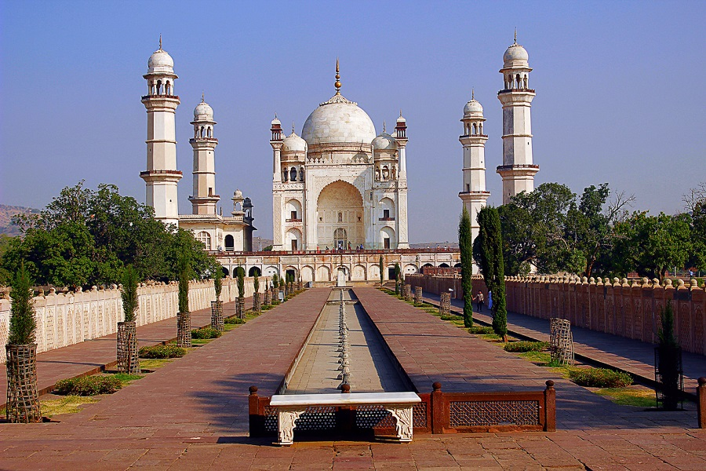

Shivaji Park, Mumbai
Shivaji Park, officially Chhatrapati Shivaji Maharaj Park, is a public park situated in Dadar, Mumbai. It is the largest park in the island city. Similar but bigger in size to Azad Maidan and August Kranti Maidan (formerly Gowalia Tank Grounds), it is of historical and cultural value because of the political and social gatherings it has witnessed, both in pre- and post-independence Mumbai. The 113,000 square metres (28 acres) of open space is renowned as having been a cradle of the game of cricket in India. The park has a variety of sports facilities including cricket nets, tennis court, a Mallakhamba area, and a football pitch amongst others.


Panchavati
Holy land for the believers of Ramayana, Panchvati attracts a lot of pilgrims. A serene town located
near Nasik, the site offers small sightings having a lot of significance in the epic of Ramayana.
Given the legend of Panchvati, the place holds a lot of religious significance even in the present
day. Sites such as the Kalaram Temple and the Sita Gufaa are on every pilgrims list. The Kumbh Mela
takes place on the river banks of Godavari, and has a surplus of pilgrims from every corner of world
during the occasion.



Bibi ka Maqbara
Bibi ka Maqbara,
Having a striking resemblance to Taj Mahal, the Bibi ka Maqbara is a beautiful mausoleum of Rabia-
Ul - Daurani alias Dilras Banu Begum, the wife of Mughal Emperor Aurangzeb. Bibi ka Maqbara was
constructed by Aurangzeb in the year 1661 in the memory of his wife. Aurangzeb attributed this
magnificent edifice in the name of his son Azam Shah who was born in the year 1653, so as to
commemorate Rabia - Ul - Daurani, who left for her heavenly abode in the year 1657.

Sula Vineyard
The Sula Vineyards is a famous winery that is located in Nashik, 180 kilometres to the northeast of
Mumbai and is renowned for its varieties of grape wines, such as Chenin Blanc, Sauvignon Blanc,
Riesling and Zinfandel. The company started from a mere 30-acre estate in Nashik and has now
extended to approximately 1800 acres spread across Nashik and Karnataka. This large estate is open
to the general public for a round of wine tasting and a tour of the vineyard on all days throughout
the year and has gained immense popularity over the years.

Dudhsagar falls
Regarded as one of the best falls in the view, Dhudsagar falls offer a
panoramic view with a spectacular scenery. The cascade is in full verve during the monsoon season
and quiet a sight to behold.

Khadakwasla Dam
Khadakwasla Dam is a famous tourist attraction and a significant work of engineering in Pune. It is
built on River Mutha which flows through the city and aids water supply to Pune and its suburban
regions. The dam forms a reservoir, called Khadakwasla Lake which offers a quick and pleasant
getaway too. Its proximity to Pune City and the scenic surroundings make Khadakwasla Dam a preferred
picnic spot. The roadways around Khadakwasla Dam is also a favourite cycling route amongst the city
cyclists. Monsoons, in particular, draw a considerable number of people to the attraction. They
mostly visit to see the transformation of the landscapes and also enjoy the scenic beauty.

Dajipur Wildlife Sanctuary
The former hunting grounds of the Maharaja of Kolhapur, Dajipur Wildlife Sanctuary was declared as a
wildlife sanctuary in 1985. Also known as Bison Sanctuary, the place is popular for Indian Bison or
Gaurs. Besides, one can also spot leopards, tigers, sloth bears etc. Set amidst verdant forests, the
sanctuary makes for a perfect getaway from the city.

Waki Woods
Waki Woods, Nagpur Overview
Situated at a distance of about 30 kms from Nagpur, Waki Woods is a sight to behold. The luscious
greens provide you with a plethora of activities, other than a scintillating natural landscape for a
picnic day out. Life in these 'woods' is a perfect mix of modernity and nature, as you will find
fully furnished tents with facilities like electricity and phones.